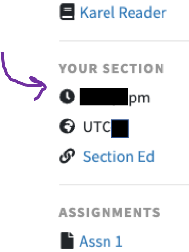

You will be attending a weekly 40-minute discussion section in small groups with a member of our teaching team. For short, we just call this part of the class “section.”
We have a large team of wonderful volunteer section leaders, whose jobs are to facilitate each of these sections. One of them will specifically be your section leader for the entire course. You and a group of about 10 other students will attend their section every week. We hope you will all get to know each other throughout the course.
When: You can find your section time on the course home page. Get ready at least 10 mins before:

When: The link for the section video conference will be posted by your section leader in the section "Ed".
Here’s how a standard section might work:
Section works best when everybody participates and interacts with each other. If you have an idea for how to solve part of a problem or have a question about anything, please share it during your section. Our goal with section is to make sure you understand everything as well as you can.
Staying up to date on the course material will help you get the most out of your discussion sections. That way, you’ll all be able to spend more time working on sample problems. Section will cover material from the previous three lectures. Please refer to the course schedule to visualize this. Before attending your section each week, please do your best to:
And of course, please be respectful and considerate throughout this course, including (and especially) during your section. Code in Place is a diverse and wonderful community.
These are just our general guidelines. During your first section, your section leader will describe their own specific section norms and goals that they’d like to focus on with all of you.
You will be added to an Ed group specifically for your section. This group will include you, your section leader, and about 10 of your classmates. You’ll all meet each other in your first section.
If you need to get in touch specifically with your section leader, make a private post (to staff only) in this group. Your section leader is a volunteer and as such might take a while to answer your question. Please be patient with them. Do not expect your section leader to debug your assignment code, for example.
Most sections will be held as a group video call over Zoom. Download the "Zoom Client for Meetings" version 4.6.10 here: https://zoom.us/download
See your section’s Ed page for the specifics about how to attend your section from your computer (e.g. a Zoom link to your section’s video call). You should get an announcement from your section leader on Ed with these details. If your section is not using Zoom, their announcement will include this information, too.
You will attend the same section at the same time every week. Section time assignments will be released by 11:59pm Monday, April 13 PDT. All sections take place between the second and third lectures of each week (Wednesday-Friday).
We will post it on the website before 11:59 PDT.
Sections start the first week of the course (this week!). Your first section will be between Wednesday, April 15 and Friday April, 17, depending on your assigned section time.
If for some reason you miss your section, everything is going to be alright: there is a recorded section. For more details see https://codeinplace2020.github.io/faqs/coursefaqs.html#section
If you were assigned to a section time that doesn’t work for you, please let us know by filling out this form.
Changing section times is hard. We only process section changes one time in the week. We will process all section swaps submitted during the first week of the course around 11:59pm on Sunday April 19, PDT. We will accept section swap requests through the first two weeks of the course.
We will post it on the website before 11:59 PDT. Once we post it, you can find it on the course website and on Ed. For the course website:
For Ed:
You should then see your section time listed on the left side of the course website, and you should be a part of an Ed group called “Section ### - Code in Place”.
We want to make sure that everybody in Code in Place is in an environment that they feel comfortable in. This includes during section. To protect your privacy, you are not required to disclose any personal information in section that you don't want to share. If you feel comfortable sharing more about yourself during section, we leave that choice up to you.
Finally, while we hope this will not be the case for anyone at any point during this course, if you encounter any misconduct during section or otherwise, please refer to the "process for reporting misconduct" outlined at the bottom of the general course information handout. Creating and maintaining a safe and open community is of utmost importance to us.
If your section leader did not show up for your section, please email us at codeinplacestaff@gmail.com with the subject line: “Section Leader did not show up”.
We’ll help you arrange a make-up section. Or, you may watch the recorded section, if you prefer.
We will answer your questions as they come up.
Please see: https://codeinplace2020.github.io/faqs/coursefaqs.html#section